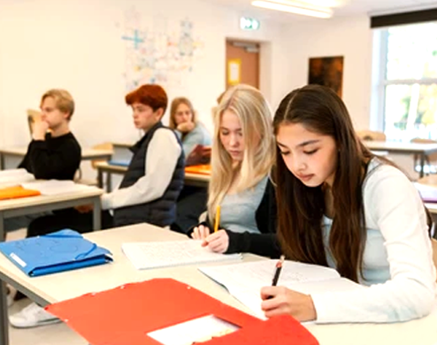
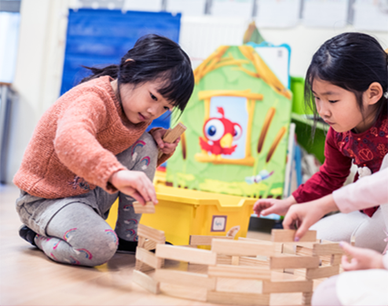

L'intimité d'une classe à douze
Personne ne passe inaperçu. Chaque élève est suivi nominativement chaque semaine. Le chiffre douze n'est pas une moyenne : c'est un plafond, identique du CP à la Terminale.
12 élèves · suivi hebdomadaireUne école, deux passeports académiques, trente-deux nationalités.
Trouver sa place,
et ses deux voix.
Dans l'intimité de classes de douze élèves, BISP donne à chaque enfant un double cursus, Cambridge et Éducation Nationale, porté par des enseignants de langue maternelle. De la maternelle au lycée, en plein cœur du quinzième arrondissement.

BISP est née en 2012 du pari simple, presque artisanal, qu'une petite école pouvait offrir à des familles internationales installées ou de passage à Paris ce que les grands établissements ne savent plus faire : l'attention individuelle, et la double culture comme seconde nature.
Nous ne fonctionnons pas en parallèle, comme deux écoles qui cohabiteraient sous un même toit. Chaque jour, un enseignant francophone et un enseignant anglophone, l'un et l'autre de langue maternelle, travaillent en binôme coordonné autour de la même classe. L'enfant n'a pas à choisir une langue principale. Les deux le sont.
Notre cursus tient simultanément les programmes de l'Éducation Nationale française et de Cambridge International, attestés par Pearson Edexcel pour les diplômes terminaux. Les élèves arrivent souvent sans maîtriser le français, ou sans maîtriser l'anglais. Ils partent bilingues, biculturels, et porteurs d'un double diplôme qui ouvre les universités française, britannique, américaine.
Quatre piliers, une signature.
Aucune autre école parisienne ne combine ces quatre exigences. Le marché propose le bilingue, ou le double curriculum, ou la classe à effectif réduit. BISP tient les quatre, sans compromis, depuis quatorze ans.
Personne ne passe inaperçu. Chaque élève est suivi nominativement chaque semaine. Le chiffre douze n'est pas une moyenne : c'est un plafond, identique du CP à la Terminale.
12 élèves · suivi hebdomadaireÉducation Nationale et Cambridge Assessment, dans le même emploi du temps, sans option ni surcharge. Les épreuves terminales donnent simultanément le baccalauréat français et les IGCSE/A-Levels britanniques.
Cambridge · Pearson EdexcelTrois cents élèves, trente-deux passeports, trois campus à taille humaine dans le quinzième. Les familles se croisent, les enfants apprennent l'altérité en récréation autant qu'en classe.
3 campus · Paris 15eDès la maternelle, l'immersion partagée à parts égales entre français et anglais installe une flexibilité cognitive durable. Une troisième langue est introduite dès le CM1, sans précipitation.
50/50 · 3e langue dès CM1
Littérature · LycéeLe binôme d'enseignants ne se relaie pas à heures fixes : il co-anime. Un même cours d'histoire-géographie se déroule en français, glisse à l'anglais pour le commentaire de carte, revient au français pour la synthèse. L'élève ne perçoit pas une frontière, il perçoit une langue de travail qui change selon l'usage. Cette plasticité-là, on ne l'apprend pas en cours du soir.
Au-delà des langues, c'est la posture qui change. Un enfant qui hésite en français trouve à se reprendre en anglais, et inversement. Personne n'est cantonné à une compétence. Le rapport à l'erreur, qui est le vrai dossier silencieux du bilinguisme, s'en trouve apaisé.
« Nous ne formons pas des enfants qui parlent deux langues. Nous formons des enfants qui pensent dans deux langues, et qui s'autorisent à passer de l'une à l'autre quand l'idée le demande. » Direction pédagogique BISP
« Mon fils est arrivé en CE2 sans un mot de français. Dix-huit mois plus tard, il rêvait dans deux langues. » Famille Lindqvist, Stockholm · Paris depuis 2024
Une intégration accompagnée, à tout âge et à toute période de l'année. Les enfants arrivent sans préparation linguistique préalable.
Préparer une intégrationQuatre cycles, un même cadre pédagogique, une seule promesse : que l'enfant progresse à son rythme, dans les deux langues, jusqu'à un double diplôme reconnu par les universités européennes, britanniques et nord-américaines.
L'immersion débute par le jeu, les rituels, la musique et la motricité. Pas d'évaluation chiffrée. Les deux langues s'installent comme des compagnes de la journée.
Lecture, écriture, mathématiques, sciences : les fondamentaux sont enseignés en parallèle dans les deux langues. Une troisième langue arrive dès le CM1.
Brevet français et Cambridge Lower Secondary. Théâtre, débats, projets scientifiques. La pensée critique se forme dans les deux langues, sans hiérarchie entre elles.
Baccalauréat français, IGCSE puis A-Levels Pearson Edexcel. Accompagnement individuel aux candidatures universitaires en France, au Royaume-Uni, aux États-Unis.
La voix BISP, au pluriel.
Trois témoignages parmi d'autres. Trois pays d'origine, trois entrées à BISP à des âges différents, une même observation : que la transition bilingue se vit, ne se négocie pas.

On cherchait une école qui ne ferait pas le tri entre nos deux cultures. BISP n'a jamais tenté de faire de Maya « la petite Suédoise qui apprend le français » : elle est devenue, en deux ans, une enfant qui vit dans les deux langues sans s'en rendre compte.
Famille Eklund Suède · Paris depuis 2023
Ce qui m'a convaincu, ce n'est pas la brochure, c'est la première visite. Le professeur connaissait le prénom de chaque enfant croisé dans le couloir. Cela ne s'invente pas, et cela ne se trouve pas dans une école de quatre cents élèves.
Famille Acosta-Moreau Mexique-France · Paris depuis 2021
Nous bougions tous les trois ans, ville après ville. À chaque rentrée, il fallait tout reprendre. À BISP, le double cursus a stabilisé Liam : même quand nous repartirons, il a une continuité Cambridge qui le suivra où qu'il aille.
Famille Okafor Nigéria-Royaume-Uni · Paris depuis 2025
Trois campus, à dix minutes les uns des autres, dans un quartier résidentiel rare à Paris : ni touristique, ni corporate. Marchés, kiosques, libraires, parcs. L'École Militaire au bout d'une rue, le Champ-de-Mars en autobus, le Parc André-Citroën à pied.
Nos élèves traversent ce quartier comme leur quartier. Les sorties au musée Bourdelle, à la Maison de la Radio, au pont Bir-Hakeim ne sont pas des événements annuels : ce sont des cours.

 Membre accrédité
Membre accrédité
 Centre examinateur
Centre examinateur
Chaque famille qui envisage BISP est reçue par la direction. Nous ne proposons pas de session collective : chaque enfant, chaque parcours, chaque arrivée à Paris est un cas particulier. Nous prenons le temps qu'il faut.
+33 1 44 18 94 83
admissions@bisparis.com